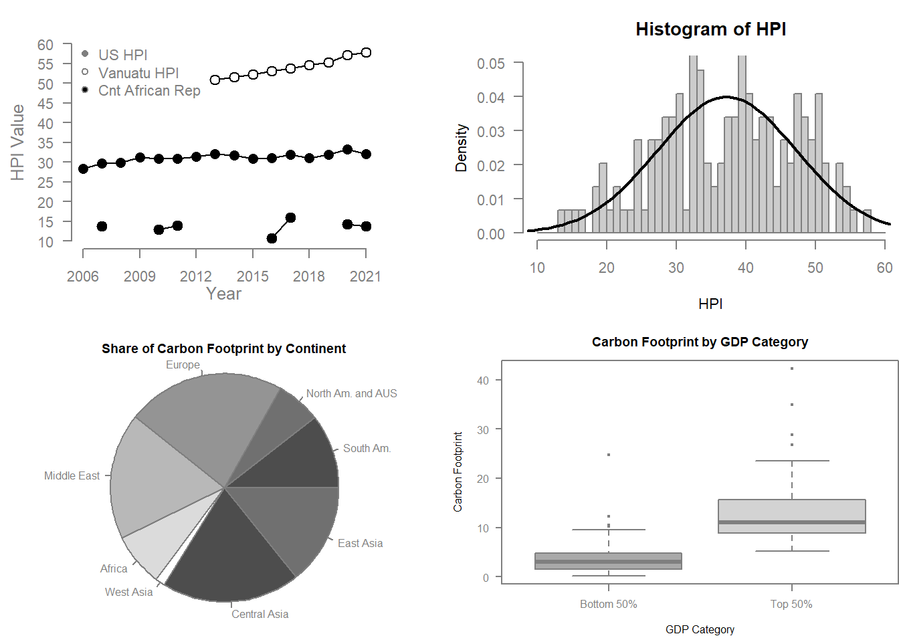
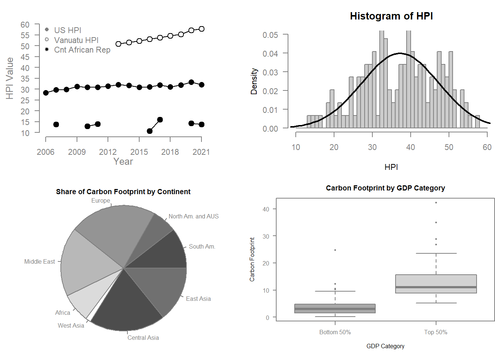

New names:
• `` -> `...4`
For the file Fall.R click here
The following is an example of a graphic found in the article Mapping the Political Landscape: Toward a GIS Analysis of Environmental and Social Difference

The graphic shows the location of buildings and terraces over space, with some specific location labels to add more data. The biggest hindrance to the success of this graphic is the limited use of color, font and texture. It is not easy to distinguish between pieces of information in the graphic since it is largely just dependent on line thickness. Black font on top of multiple types of black elements, over a grey scale background ultimately make a cluttered and confusing display that seems overly compacted. The strict border imposed on the graphic makes it well contain but also contributes to this feeling. The location identifiers around the map are both repeated and not necessary for the information displayed. An inset map could be employed instead as a separate graphic. The text over the graphic adds limited value as well. They are meant to represent building type areas, but without any boundaries visible or a link to specific buildings, they add almost no novel data.
Using Murrell’s Functions on HPI Data
New names:
• `` -> `...4`
In the modern digital age, the increasing availability of large datasets, commonly referred to as “big data,” has revolutionized the way organizations, governments, and researchers analyze information. Big data holds enormous potential to uncover trends, inform decision-making, and improve predictive models across a wide array of fields. However, despite these advantages, the use of big data also presents significant risks, particularly when it comes to overfitting and overparameterization. If left unchecked, these issues can lead to inaccurate predictions, misguided conclusions, and the erosion of public trust in data-driven models. The case of Google Flu Trends serves as a cautionary tale, highlighting the dangers of relying too heavily on big data without sufficient consideration of its limitations. Overfitting occurs when a model is excessively complex and begins to capture not only the underlying patterns in the data but also the noise and random fluctuations present in the dataset. In other words, an overfit model is tailored too closely to the training data, which compromises its ability to generalize to new, unseen data. This problem is particularly common in big data environments, where the sheer volume of information can lead to the development of highly intricate models. While such models may perform exceptionally well on historical datasets, they often fail to provide accurate predictions when applied to new or evolving situations. Overparameterization, a closely related issue, occurs when a model incorporates an excessive number of parameters relative to the amount of useful information in the data. It can result from throwing variables at a problem and seeing what sticks, rather than stopping and asking why. This leads to a situation where the model becomes overly sensitive to minor changes or irrelevant features in the dataset. In the context of big data, the abundance of variables available for analysis may tempt researchers to create models with a vast number of parameters, especially if they seemingly predict trends. However, doing so increases the risk of producing a model that lacks robustness and overfits the data. The more parameters a model has, the more likely it is to describe spurious correlations that do not reflect true underlying relationships. Additionally, it is important to know that while large, big data is not the result of the entire population. It falls susceptible to sampling error and bias. If this factor is ignored the model runs the risk of only working on similar datasets, especially those it was trained on. Bigger is not always better and well implemented samples remain statistically more significant than big data analytics. Big data promises a model, however, that is cheaper and easier to produce and update than traditional methods. These benefits must be weighed against the potential issues in sampling, misrepresentation, and loss of logical reasoning. Google Flu Trends fell victim to these mishaps in big data use. The model relied heavily on a wide range of search terms, which regularly were updated, many of which turned out to be unrelated or only tangentially associated with flu activity. As the model grew more complex, it became increasingly sensitive to shifts in search behavior that did not correspond to real-world flu cases. Moreover, the data it relied on was not static—human behavior, particularly online search behavior, evolves over time. IT was also susceptible to googles own search algorithm suggestions, which manipulated users search frequencies. This evolution rendered GFT’s predictions increasingly unreliable as the model struggled to adapt to new patterns in the data. The Google Flu debacle highlights the importance of maintaining a balanced approach to big data analysis. While big data offers powerful opportunities to uncover patterns and make predictions, it is crucial that researchers and data scientists remain mindful of the risks posed by misusing statistics. Models must be kept as simple as possible while still capturing meaningful patterns. Cross-validation techniques should be employed to test the model’s performance on new data, ensuring that it is not overly tailored to the idiosyncrasies of the training set. Furthermore, integrating domain knowledge into the modeling process can help to ensure that the parameters used are grounded in reality rather than being driven by data alone. In conclusion, big data, when used properly, has the potential to drive significant advancements in predictive analytics and decision-making. However, it also presents considerable dangers, especially when complex models are allowed to overfit or become overparameterized. The Google Flu Trends case provides a clear illustration of how these issues can arise, even in high-profile projects. As data continues to grow in volume and variety, it is imperative that researchers adopt rigorous practices to ensure that their models remain accurate, reliable, and ageneralization to real-world scenarios.
Wickham showcases they R packages that make up the tidy verse. He focuses especially on the package ggplot2 the premier R graphic maker. This package builds of the conceptual ideas from the Grammar of Graphics which is a book providing the fundamental components of digital graphic creation. R is the practical implementation of the concepts discussed in this book and allows users to programmatically create graphics built of graphical components. He focuses on this package and the reason a programing approach is ideal for graphic creation. He stresses the ease of explanation and reproduction that comes with programing graphics.